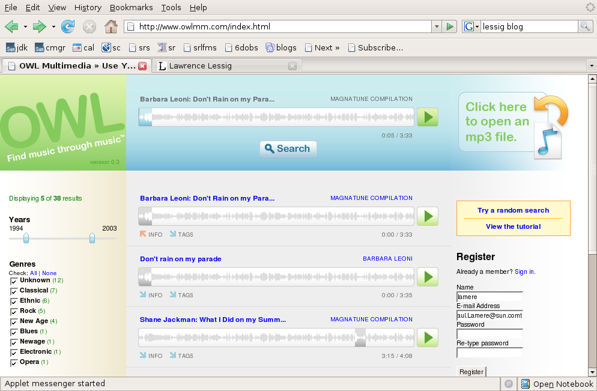

Owl - Find music through music
OWL multimedia is a content-based music search tool - it will find music from creative commons labels such as Magnatune and ccMixter that Sound similar to your query song. OWL has a nifty interface, you can just drop an MP3 file from your collection into OWL - it will quickly analyze a song (and it really is quick, less than 2 seconds on my laptop) and then give you a list of songs from these creative commons labels that are similar - you can play the songs right in your browser too. It seems though that the search query is limited to a very small window of about 10 seconds within a song. The interface is pretty slick, you can filter the results by genre, year, license or label - and the integrated Java player is quite nice.
As far as the similarity search goes, I was less impressed. I was surprised that for many queries, I would receive results with many songs from widely different genres - Lute music yielding Electronica, Blues guitar yielding Hip-hop. Of course, this is an on-going problem with content-based music similarity - what is similar for one listener is not necessarily similar for another. Still, I wonder if OWL would do better to model a whole song and search based on whole song similarity rather than the small window that it is doing.

Here are some examples of how results OWL produces:
Query: First 10 seconds of: Promo Mom - by the Strap Ons - a hard core punk song - search results
- Concerto for Violin and Orchestra
- Praeludium in G
- Tentos (no.4)
- Fantasia
- Sonata VIII in C Minor
These are all classical works - not a good match in the bunch. I'm guessing that OWL was fooled by the 2 seconds of silence followed by a very un-musical shout. So lets try a section in the middle of the song where it is all music - so starting at about 30 seconds into 'Promo mom' we get the following search results:
- Promo mom by the Strap Ons (it found itself - that's good!)
- Part that ass by the Strap Ons
- Chucky got lucky by the Strap Ons
- Function by Somadrone
- Drugs sex violence by the Strap Ons
This is much better - it found lots of 'Strap On's and the song by Somadrone fit in very well too.
Using the song 'Juke Joint Boogie' - delta blues on guitar - starting at 20 seconds in I got search results with:
- Juke Joint Boogie - it found itself (actually twice, since it was on a compilation cd too)
- Suite no 3 in C Major -a cello piece
- Telekonology - an ambient piece
- Partita Seconds in sol minore - another cello piece
It
looks like OWL has a tendency to match delta blues guitar and cello -
lets start with cello and see what we get - starting with Partita
Seconda in Sol Minore by Vito Paternoster we get
- Partita Seconda - it finds itself, good!
- Sonata Prima by Vito Paternosta - more cello good
- Suite 5 BMV 1011, prelude by Antonio Meneses - more cello
So the results for cello sonatas yield more cello sonatas - no clunkers in the first 20 results
This pattern continued for a large number of searches - some yielded very good results, while some yielded surprisingly poor results. Often times I would receive very different search results if I shifted the 10 second query window even by a second or two - leading me to conclude that they may get better (or at least more stable) results if they use a wider query window.
Perhaps the real goal of OWL is not to find songs that sound like a query song - but really to find snippets of songs - this would be very useful if you are creating a remix - a tool to help you find song fragments that fit in just right with your song would be incredibly useful for a remixer - but OWL isn't billing itself as a remix tool, it is billing itself as a music discovery tool :
Owl's music discovery engine compares your favorite songs to thousands of others to find similar songs for you to listen to, enjoy, and purchase.
OWL has now found its way onto the search page of creativecommons.org,
right next to Google, Yahoo and Flickr - a pretty visible spot, so I
expect that we will be hearing more from OWL - but in the long run, I
don't expect too much more from them. Rumor is that the music
technologists/machine learning team behind OWL has moved on to bigger
and better things - so I don't expect to see much improvement in the
core similarity engine of OWL.
Via lessig blog